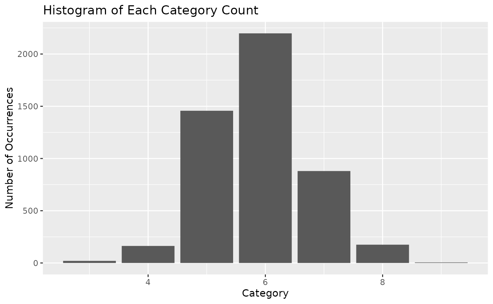
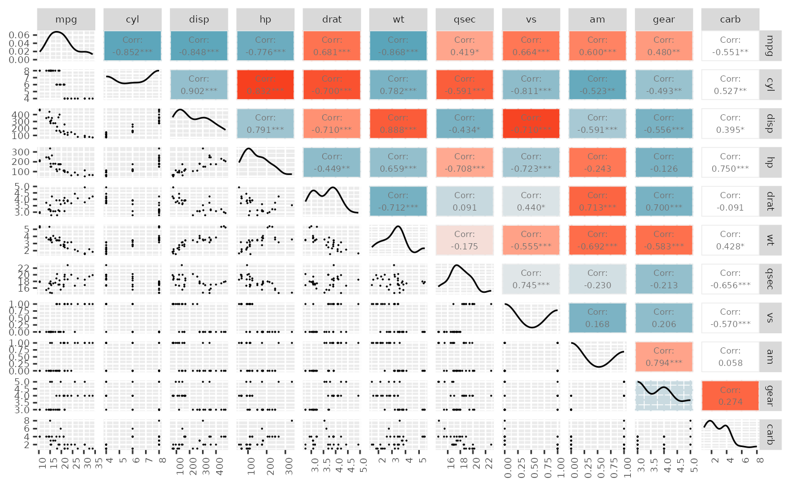

wineclassify
wineclassify.RmdThis document contains examples and description explaining how
wineclassify package can be used to help the users to build
a KNN classification model.
In general, the wineclassify package perform the
following tasks to make classification analysis easier: * Read the csv
dataset from the website and turn it into a data frame * Create a
histogram and a confusion matrix with the heat map for the exploratory
data analysis * Build KNN model with the most accurate K value and
return its performance with a confusion matrix
Functions
The package includes the following functions, which can be divided
into three parts: * 1. Data loading: data_load() * 2.
Visualization: hist_plot(), corr_plot() * 3.
Model building and evaluating: model_build(),
model_results()
example
To explain how the package works, we use the white wine data set stored in the repository Github to perform the following tasks.
Initialization
library(wineclassify)
#> Registered S3 method overwritten by 'GGally':
#> method from
#> +.gg ggplot21. Data loading
data_load(): Read the data set
The function data_load() can help the user download the
csv data set from the website and turn it into a data frame.
library(wineclassify)
## basic example code
d <- data_load("https://raw.githubusercontent.com/kashish1928/white_wine_dataset/main/winequality-white.csv", ";")
#> Rows: 4898 Columns: 12
#> ── Column specification ────────────────────────────────────────────────────────
#> Delimiter: ";"
#> dbl (12): fixed acidity, volatile acidity, citric acid, residual sugar, chlo...
#>
#> ℹ Use `spec()` to retrieve the full column specification for this data.
#> ℹ Specify the column types or set `show_col_types = FALSE` to quiet this message.
d
#> # A tibble: 4,898 × 12
#> `fixed acidity` `volatile acidity` `citric acid` `residual sugar` chlorides
#> <dbl> <dbl> <dbl> <dbl> <dbl>
#> 1 7 0.27 0.36 20.7 0.045
#> 2 6.3 0.3 0.34 1.6 0.049
#> 3 8.1 0.28 0.4 6.9 0.05
#> 4 7.2 0.23 0.32 8.5 0.058
#> 5 7.2 0.23 0.32 8.5 0.058
#> 6 8.1 0.28 0.4 6.9 0.05
#> 7 6.2 0.32 0.16 7 0.045
#> 8 7 0.27 0.36 20.7 0.045
#> 9 6.3 0.3 0.34 1.6 0.049
#> 10 8.1 0.22 0.43 1.5 0.044
#> # ℹ 4,888 more rows
#> # ℹ 7 more variables: `free sulfur dioxide` <dbl>,
#> # `total sulfur dioxide` <dbl>, density <dbl>, pH <dbl>, sulphates <dbl>,
#> # alcohol <dbl>, quality <dbl>2. Visualization
hist_plot()
The function hist_plot() plots a histogram given the
data that shows the count of each category.
library(wineclassify)
hist_plot(d, "quality")
corr_plot()
The function corr_plot() plots a correlation matrix with
heatmap from the variable pairs in the given data.
library(wineclassify)
## basic example code
corr_plot(mtcars)
3. Model building and evaluating
model_build()
The function model_build() builds the KNN model using
the most accurate K value.
library(wineclassify)
model_build(iris, recipes::recipe(Species ~., data = iris), "Species")
#> ══ Workflow [trained] ══════════════════════════════════════════════════════════
#> Preprocessor: Recipe
#> Model: nearest_neighbor()
#>
#> ── Preprocessor ────────────────────────────────────────────────────────────────
#> 0 Recipe Steps
#>
#> ── Model ───────────────────────────────────────────────────────────────────────
#>
#> Call:
#> kknn::train.kknn(formula = ..y ~ ., data = data, ks = min_rows(13L, data, 5), kernel = ~"rectangular")
#>
#> Type of response variable: nominal
#> Minimal misclassification: 0.03333333
#> Best kernel: rectangular
#> Best k: 13model_results()
The function model_results() creates the confusion
matrix of the fitted KNN model to assess performance.
library(wineclassify)
split <- rsample::initial_split(iris, prop = 0.75, strata = Species)
ex_test <- rsample::testing(split)
ex_train <- rsample::training(split)
ex_recipe <- recipes::recipe(Species ~., data = ex_train)
ex_model <- model_build(ex_train, ex_recipe, "Species")
model_results(ex_test, ex_model, "Species")
#> Truth
#> Prediction setosa versicolor virginica
#> setosa 12 0 0
#> versicolor 1 12 1
#> virginica 0 1 12